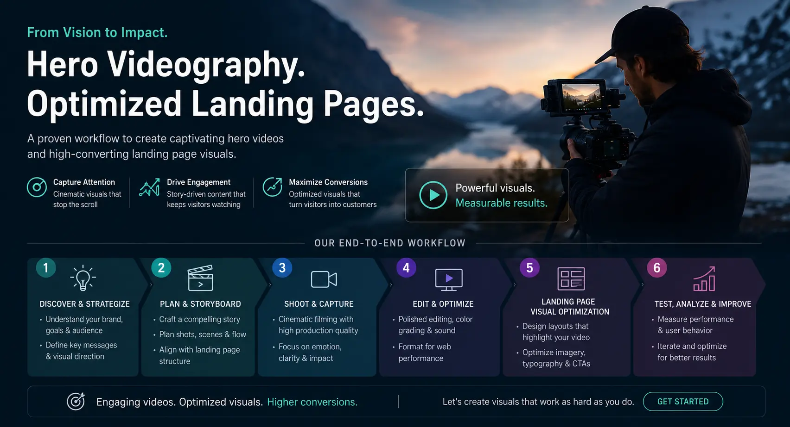
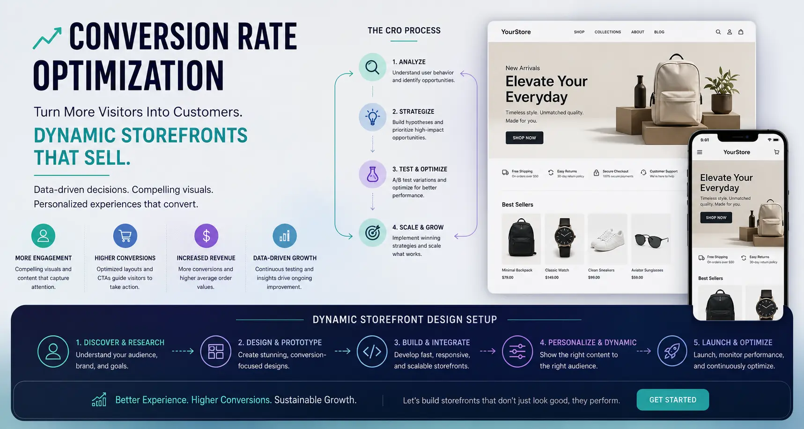

Optimizing Cinemagraphs and Header Videos to Double Website Session Durations
The Dwell Time Challenge: Winning the First 10 Seconds of Web Audits
When a user lands on a website, the first ten seconds determine whether they will stay and explore or bounce back to search results. Standard static layouts, regardless of how clean they are, often struggle to capture immediate interest. In an era of short attention spans, websites must offer engaging visual experiences the moment a page loads.
This has led to the adoption of dynamic visuals, such as looping videos and cinemagraphs. These assets combine photography and cinema to create captivating focal points. Through optimized **Website Hero Banner Videography** and **Landing Page Visual Optimization**, brands can build **dynamic web storefront design** environments that hold attention, reduce bounce rates, and double session durations.
However, adding video to web layouts is a double-edged sword. If unoptimized, heavy files slow down load speeds, damaging the user experience. Achieving the right balance between visual quality and performance is essential to deliver high-converting **conversion rate optimization visuals**.
Tactical Implementations: Moving Headers and Loop Production
Using video headers successfully requires specific design and production choices to maintain focus and readability.
- Designing clean moving website headers. When building **Moving website headers**, the video loop must support—not distract from—the overlay text and calls to action. Use high-contrast color overlays or dark gradients on the video layer to ensure text remains readable. Keep video movement slow and smooth, avoiding fast pans or jarring cuts that compete with the site messaging.
- Cinemagraph production for subtle, targeted motion. Cinemagraphs keep 90% of the frame static while looping motion in a specific area—such as steam rising from a cup or a garment moving in a breeze. This technique creates a focal point that guides the user's eye to key areas of the page without causing visual distraction.
- looping background video production workflows. Creating seamless loops requires precise timing. In **looping background video production**, the beginning and end of the loop must match perfectly. Use cross-fading techniques in editing to hide the cut point, creating an endless loop that keeps the background motion natural.
- E-commerce landing page video optimization. An **e-commerce landing page video** should demonstrate product benefits within the first few seconds. Show the product in use, highlight its texture, or display the user experience, allowing visitors to understand the value proposition without clicking play.
Double Session Durations
Dynamic movement engages visitors, increasing average dwell time. Longer sessions improve brand trust and give users more time to explore your offerings.
Lower Bounce Rates
A striking hero video hooks users immediately. Providing a premium visual experience the moment the page loads reduces the bounce rate on landing pages.
Drive Visual Hierarchy
Cinemagraphs let you guide user attention to key elements, such as features or CTA buttons. Subtle motion acts as a visual signpost, boosting conversions.
Improve SEO Performance
Search engines reward pages with high dwell times. Increasing session durations through optimized video tells search algorithms your content is valuable, boosting rankings.

The Web Performance Balance: Video Compression Guidelines
Heavy video assets can slow down page loads. Use these compression standards to keep your site fast and responsive.
- Target file sizes and resolution limits. Keep background loop files under 3MB—ideally under 1.5MB. Set the resolution to 1080p for desktops and scale it down to 720p or lower for mobile devices. Using custom breakpoints ensures you deliver the right file size to the right device.
- Next-gen codecs and compression for web video. Use WebM format with VP9 or AV1 compression, alongside standard MP4 (H.264) for fallback support. WebM offers high compression rates, maintaining image clarity at a fraction of the file size of traditional MP4 files.
- Stripping audio tracks to save bandwidth. Background videos should always be muted. When compressing files, remove the audio track entirely from the video container. This strips unnecessary data from the file, saving bandwidth and ensuring the browser autoplays the video automatically.
- Leveraging CSS fallback structures. Always set a static placeholder image (first-frame WebP) as a CSS background fallback. While the video loads in the background, users see a clean static image, preventing empty white blocks and maintaining layout integrity.
Code Optimization: Autoplay, Mute, and Lazy Loading
Configure your video tags correctly to ensure smooth playback and prevent page lag during initial loads.
HTML5 Video Configuration
-
Always include the
muted,autoplay, andloopattributes in your HTML video tag. -
Add the
playsinlineattribute to ensure the video autoplays on iOS devices without opening in full-screen. -
Set the
preload="metadata"orpreload="none"attribute to prevent the browser from loading the entire file on page load.
Lazy Loading Video Assets
- Avoid loading videos that sit below the fold during the initial page load.
- Use Intersection Observer APIs to load and play video assets only when they enter the user's viewport.
- This saves user bandwidth and keeps your initial page load speeds fast.
Hardware Acceleration
-
Apply CSS properties like
will-change: transformortransform: translate3d(0,0,0)to your video container. - This forces mobile browsers to use GPU rendering, preventing lag and keeping scrolling smooth.
- Avoid using complex CSS filters on top of playing video layers.
Integrating Video into the Conversion Funnel
To improve conversions, motion assets should be placed strategically across the user journey.
- The interactive hero section. Use a looping hero video to establish the brand lifestyle. Pair this with a clear value proposition and a CTA button, using the visual energy of the video to drive initial action.
- Feature details with cinemagraphs. Place cinemagraphs alongside product features further down the page. The subtle motion draws attention to specific features without distracting from the accompanying copy.
- Video reviews and social proof. Place customer testimonial videos or user-generated content loops next to purchase buttons. Authentic reviews in video format build trust and encourage shoppers to complete their purchase.

Conclusion
Optimizing cinemagraphs and header videos is an effective way to improve website metrics and boost dwell time. By replacing static layouts with **Website & Catalog Visual Production** assets that feature optimized loops, brands can create engaging storefronts.
Through smart **compression for web video**, responsive video tags, and custom **Website Hero Banner Videography**, you can deliver motion assets that boost conversions without affecting page load speeds.
At The PhD Ads in Madurai, we produce beautiful **looping background video production** assets, design **dynamic web storefront design** layouts, and implement **Landing Page Visual Optimization** strategies to help brands build engaging online storefronts.
Key Topics
Build an Engaging Digital Storefront
Ready to double your session durations with optimized web video? At The PhD Ads in Madurai, we produce beautiful cinemagraphs, set up compressed video headers, and optimize landing page layouts that convert.
Email: team@e2o.in